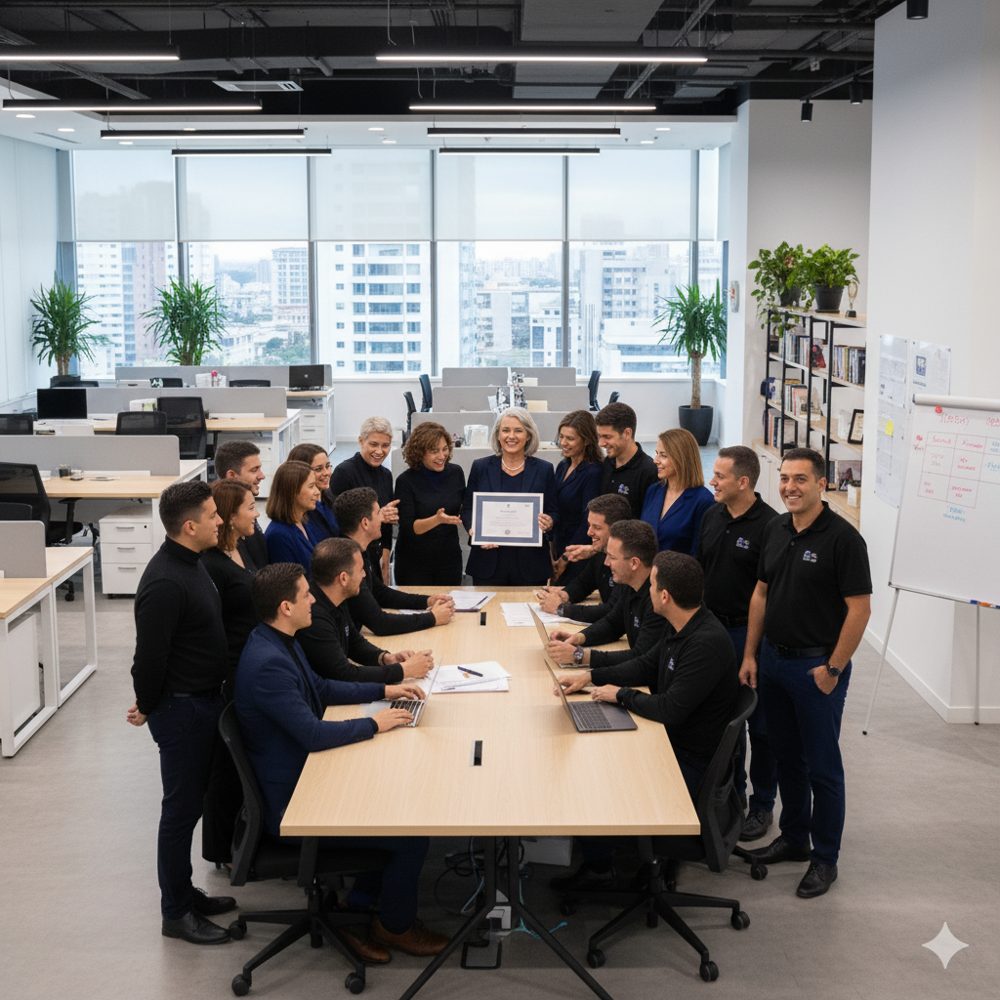
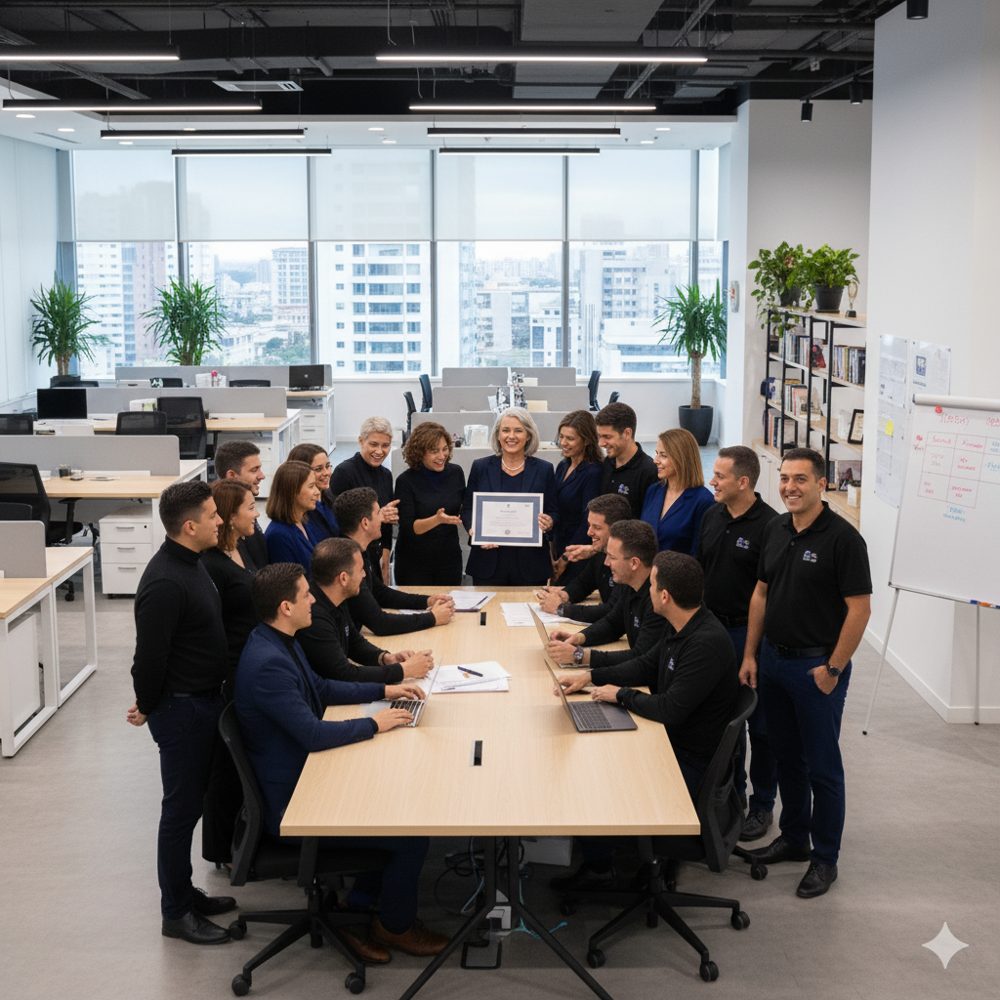

Bright Minds Academy
YEARBOOK 2025
Um capítulo de conquistas e memórias!
O verdadeiro segredo da jornada não está em evitar os desafios, mas em abraçar cada um deles como uma oportunidade de crescimento pessoal e transformação. São esses momentos de adversidade, os caminhos tortuosos e muitas vezes árduos, que têm o poder de nos moldar de formas que jamais imaginaríamos. É através das dificuldades que aprendemos lições profundas sobre nossa resiliência, coragem e capacidade de superação. E, com o tempo, percebemos que são exatamente essas experiências que constroem as histórias mais extraordinárias, aquelas que inspiram e tocam o coração de todos que as escutam. Ao invés de temer os obstáculos, devemos vê-los como degraus necessários para atingirmos nosso potencial máximo, pois é enfrentando os momentos mais desafiadores que descobrimos a verdadeira força que reside dentro de nós.
 
